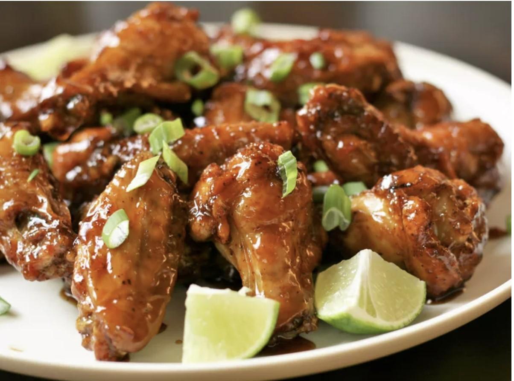

Air Fryer Honey Garlic Chicken Wings

Description
These crispy air fryer honey garlic chicken wings are a flavor explosion in your mouth–the perfect combination of crispy, juicy chicken wings and a sticky-sweet honey garlic sauce, with just the right amount of heat from cayenne pepper. These wings are easy to make in the air fryer and will satisfy all your cravings for a tasty and indulgent snack. Whether you're hosting a party or just looking for a delicious appetizer, these wings are sure to impress your guests and have them begging for the recipe!
Ingredients
- 1 tablespoon baking powder
- 1 teaspoon salt
- 1/2 teaspoon black pepper>
- 1/2 teaspoon garlic powder
- 1/2 teaspoon paprika
- 1/4 teaspoon cayenne pepper
- 2 pounds chicken wings
- 1/2 cup honey
- 1/4 cup soy sauce
- 2 cloves garlic, minced
- 1 tablespoon grated fresh ginger root
- 1 tablespoon cornstarch
- 1 tablespoon water
- 2 tablespoons green onions
Directions
-
Preheat the air fryer to 400 degrees F (200 degrees C).
-
Mix baking powder, salt, black pepper, garlic powder, paprika, and cayenne pepper together in a small bowl.
-
Pat chicken wings dry with paper towels, then toss them in spice mixture until evenly coated. Arrange wings in a single layer in the air fryer basket.
-
Cook wings in the preheated air fryer until crispy and golden brown, juices are clear, and meat is no longer pink at the bone, 20 to 25 minutes. An instant-read thermometer inserted near the bone should read 165 degrees F (74 degrees C).
-
Meanwhile, make the honey garlic sauce. Stir honey, soy sauce, garlic, and ginger together in a small saucepan over medium heat.
-
In a separate small bowl, whisk together cornstarch and water until smooth, then add to the saucepan. Cook until sauce thickens, 1 to 2 minutes.
-
Transfer wings to a large bowl, pour honey garlic sauce over wings, and toss to coat evenly. Garnish with chopped green onions and serve hot.
Return to Odin Recipes